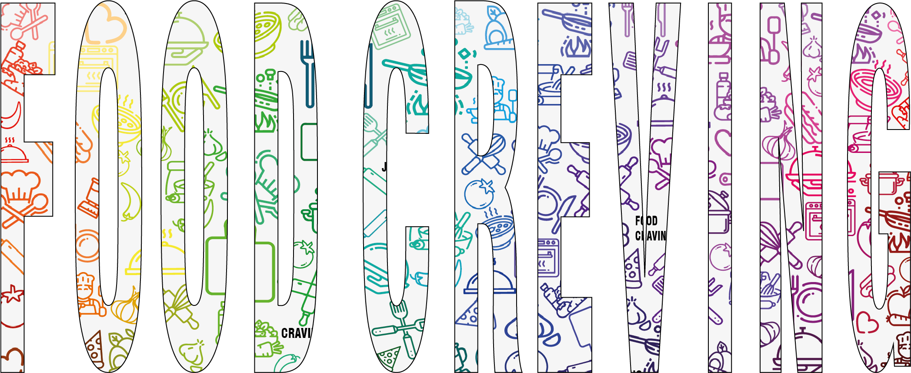

SOBRE NOSOTROS
En esta página subimos recetas copadas, algunas conocidas otras no tanto.Son faciles de hacer (unas mas que otras) cualquiera puede hacerlas desde el que es un super genio en la cocina hasta el que no tiene ni idea. Podes dejarnos tus opinones o aportar recetas en la parte de contactos.